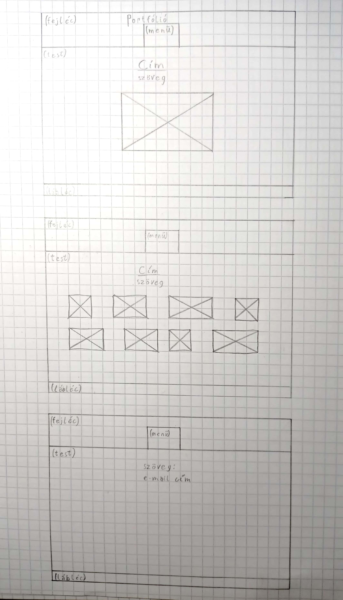

Dokumentáció

A weblap elkészítése sok nehézséget okozott, mivel még soha nem csináltam weboldalt, nem is tudtam mi az a portfólió.
Tervezéskor sok változaton mentem át, feljebb a végső változatt látható.
Mivel az egész html-es és a CSS-es kódolás új volt nekem, ezért a kódok meglehetősen össze-vissza lettek megírva,
emiatt meglehet, hogy nem feltétlenül lehet végigkövetni a készítés menetét bennük.
Első rész amivel megküzdöttem, az a lapot felépítő részek (fejléc, test, lábléc) elkészítése volt.
Talán ez volt a legnehezebb része az egésznek, a színekkel még mindig nem vagyok teljesen megelégedve.
Következő rész a menük voltak, ez nem volt akkora fáradtság, a legtöbb gondot a másik oldalak elkészítése okozta.
Végül pedig jöttek a képek, amikkel szintén sokat szenvedtem, viszont nem úgy mint a lap részeivel.
Amott magával a kóddal voltak problémáim. Itt viszont a képek rendes elrendezésével voltak gondok, persze a kód sem sikerült mindig.
Befejezésként pedig már csak ki kellett tölteni szövegekkel az oldalakat, valamint a jelenlegi Dokumentáció elkészítése volt.
Felhasznált oldalak:
w3schools.com
youtube-ra feltöltött előadások
lipsum.com